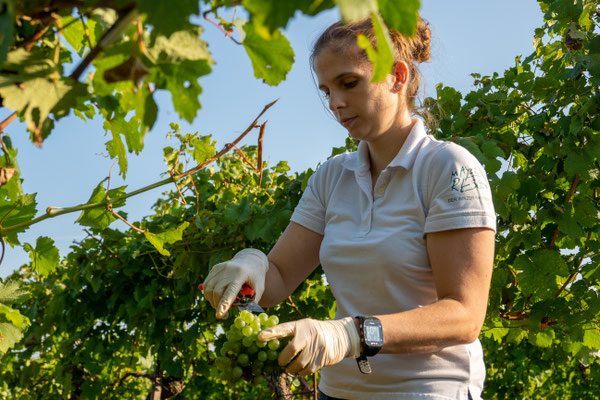

Zusammen Großes schaffen – seit vier Generationen
Als traditioneller Familienbetrieb nutzen wir unser langjähriges Wissen, um die besten Produkte zu erzeugen – und gehen dabei besonders schonend mit unserer Umwelt um, beim Pflanzenschutz wie bei der Bodenarbeit.
Kurze Wege, lange Zeit
Wir legen sehr viel Wert auf die Erziehung und das Wachstum unserer Rebstöcke, die das ganze Jahr über umsorgt werden und durch Handarbeit ihre Bestform erreichen. Weil die Weingärten nahe am Betrieb liegen, ersparen wir uns lange Transportwege: Die Trauben werden sofort weiterverarbeitet.
Dem Traubenmost lassen wir danach seine Zeit, um alle Stadien zu durchlaufen. Im Oktober kann er in der Buschenschank als Saft, Sturm oder Staubiger verkostet werden. Der fertige Wein lagert im gut temperierten, 400 Jahre alten Keller weiter, bis er gefüllt wird.
Wir nutzen die natürliche Kühlung der Erde für die Lagerung unserer edlen Tropfen. In Kombination mit moderner Kellertechnik entstehen sehr fruchtige, moderne Weine.
- knapp 6 ha Rebfläche
- 80 % Weißwein
- 20 % Rotwein
- kontrolliert integrierte Bewirtschaftung
- 400 Jahre alter Gewölbekeller
Unsere Sorten: Grüner Veltliner, Riesling, Rivaner, Weißburgunder, Neuburger, Muskateller und Zweigelt. Am Betrieb stehen außerdem Obstbäume – daraus brennen wir eigene Destillate: Trauben-, Nuss-, Apfel-, Zwetschken-, Pfirsich-, Kirschen- und Marillenbrand.
Von Georg Mayer 1918 bis heute
- 1918Georg Mayer gründet den Familienbetrieb in der Steiner Kellergasse.
- 1930Beim Einsturz des Weinkellers verünglückt Georg Mayer tödlich. Seine Witwe führt das Unternehmen weiter.
- 1948Übergabe an Sohn Georg Mayer. Er widmet sein Leben den Hauern und ihren Sorgen und wird allgemein der „Hauervater“ genannt – Obmann der Hauerinnung Krems-Stein, Vorstand der Winzergenossenschaft und der Raiffeisenkasse.
- 1980Tochter Christine (geb. Mayer) und Johann Resch übernehmen den Betrieb. Johann Resch ist langjähriger Obmann des Weinbauvereins Stein-Förthof und war von 2016 bis 2026 Obmann der Hauerinnung Krems-Stein.
- 2013Seit dem Frühjahr gehört die Buschenschank zu den „Top-Heurigen“.
- 2016Tochter Barbara (geb. Resch) und Ehemann Johannes Beer führen das Weingut in 4. Generation.
- 2017Im Herbst kommt Tochter Marie zur Welt, im Dezember 2019 folgt Tochter Anna.
- 2018–2020Die Buschenschank wird im Falstaff mit 2 von 4 Weintrauben bewertet.
- 2026Ab 1. April stehen fünf neue Wein-Apartments zur Verfügung.

Wer am Rebentor arbeitet
Barbara Beer (geb. Resch)
Absolvierte die HBLA Klosterneuburg mit ausgezeichnetem Erfolg und war von 2009 bis 2011 Österreichische Weinkönigin.
Johannes Beer
Masterstudium Media Management (Abschluss 2013), Facharbeiter für Weinbau mit ausgezeichnetem Erfolg. Seit 2026 Obmann-Stellvertreter des Weinbauvereins Stein-Förthof.
Christine und Johann Resch
Führten den Betrieb ab 1980. Johann Resch war von 2016 bis 2026 Obmann der Hauerinnung Krems-Stein und ist langjähriger Obmann des Weinbauvereins Stein-Förthof.
Bio-Weingut Beer
Der Bio-Betrieb von Johannes Beer. Von dort stammt der Blütenmuskateller REBE – 2026 mit AWC Gold, NÖ Gold und PIWI Silber ausgezeichnet.

Verkostung, Kellerführung, Riedenwanderung
Gerne können Sie bei uns Weinverkostungen, Kellerführungen oder Riedenwanderungen nach vorheriger Terminvereinbarung ab 10 Personen buchen.
Dazu die Rätselrallyes am Steiner Weinberg und in der Altstadt – ein Suchspaß für Groß und Klein, Dauer rund eine Stunde. Erwachsene 8 €, Kinder ab 3 Jahren 3 € (Schatz inklusive). Bitte mindestens einen Tag vorher anmelden.
Rätselrallye Steiner Weinberg
Der verstorbene Georg Mayer soll einen Schatz versteckt haben, den es mit Hinweisen am Steiner Goldberg zu finden gilt.
Rätselrallye Steiner Altstadt
Es wurde eine Truhe in einer Weinberghütte gefunden – leider ohne Schlüssel. Folge den Hinweisen, löse das Rätsel und finde den Schlüssel.